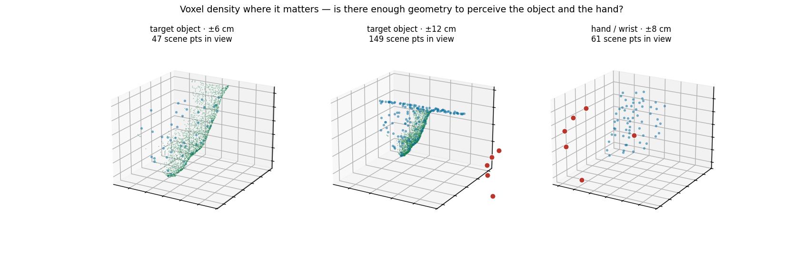
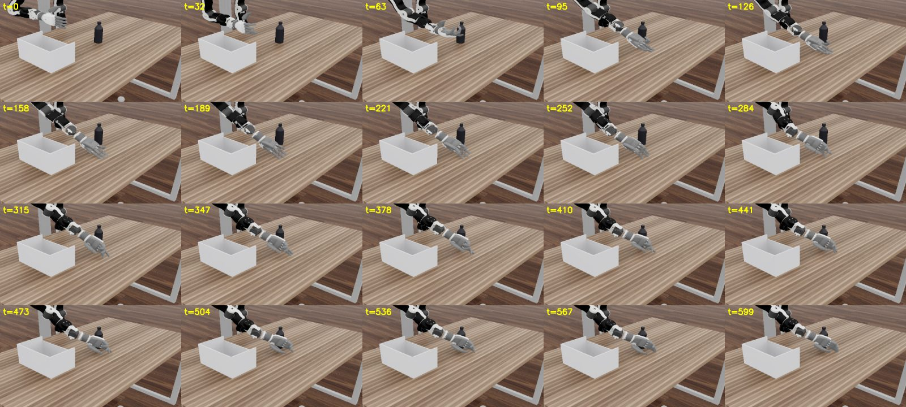

01What the model is given
Before any claim about behaviour: the observation, rendered as the model receives it — after the agent is stripped, after the 1.5 cm voxel grid, after the 12,000-point cap.
Raw density is not the problem. The sim cloud is 12,000 points at 1046.8 points per occupied litre against training's 1107.0, with nearest-neighbour spacing of 17.04 mm (median) versus training's 14.23 mm. What differs is extent: the sim observation spans 552.5 × 234.4 × 206.6 cm against training's 193.3 × 129.9 × 91.5 cm. The same point budget is spread over roughly fifteen times the volume, so the region that matters — around the hand and the object — is thinner even though the global figure looks healthy.
| points near the acting wrist | sim (deployed) | training (n=30 episodes) |
|---|---|---|
| within 20 cm | 266 of 12,000 (2.22%) | 10.5% |
| within 30 cm | 892 of 12,000 (7.43%) | 21.9% |
| nearest point | 1.9 cm | 2.6 cm |
Corrected 2026-08-04. The caveat previously here said the sim
cloud was agent-stripped while training's was not, and that this asymmetry explained part of the
gap. That is wrong: PWAM_STRIP_AGENT_CM was never set in the run these
numbers come from (the strip diagnostic does not appear in its log at all), and training uses the
fullscene variant, which also keeps the agent. Both clouds contain the hand, so
the comparison is like-for-like and the gap is larger than was stated, not smaller —
4.7× fewer points within 20 cm of the acting wrist, 2.9× within 30 cm.
The mechanism is the point budget, not the sensor. The sim cloud sits at the 12,000-point cap (57,600 before voxelisation) while training's 5,871 points are not capped at all, and the sim scene spans about ten times the bounding volume — 552×234×207 cm against 204×132×95 cm. Per litre of bounding box that is 0.45 points against 2.30, a 5.1× deficit. The same budget spread over a much larger room means the region where the task actually happens is the region that loses resolution.

02Three statistics of ours that were wrong
Retractions first, because two of the headline claims in the earlier versions of this log were built on them. All three were caught by us; none changed the outcome, all changed the mechanism.
| claim | what actually produced it | corrected |
|---|---|---|
| "the model learned to stop 10.6 cm short" | an inference from a closing-rate series plus a frozen-anchor histogram, never a measurement | struck |
| "predictions decay in direction — the trajectory oscillates" | a ratio whose numerator was a radius, not a displacement | struck; directions actually agree at cos +0.99 |
| "keypoints sit 13.7 cm from the nearest scene point — possible mis-registration" | a median over all 12 keypoint slots, 6 of which are idle-hand placeholders sitting at one identical coordinate | acting hand alone: 1.2 cm (min 0.3, max 1.9), inside the 1.7–9.5 cm training band. No defect. |
The third has a general form worth stating, because it has now produced false alarms three separate times including once in the bridge's own instrumentation. The robot array is 12 keypoints = [left, right] × [wrist + 5 fingertips], and pick-and-place is single-handed, so half the slots are placeholders rather than measurements. Any statistic taken over all twelve is a mixture of ~6 real values and ~6 identical phantoms, and its median lands in the empty gap between the two modes — which looks exactly like a defect. The correct selector is the exists mask; a magnitude test does not work, because the placeholders get centre-shifted to a non-zero value. The same error also produced a "zero points within 20 cm of the wrist" figure that is really 266 (the table in §01 is the corrected one, anchored on the acting wrist).
Standing rule adopted from this: when two numbers disagree, diff the expressions that produced them before diffing the values.
03What the closed loop does
One episode of the learned policy, third-person camera, 600 steps at 20 Hz.

With the retracted statistics removed, the surviving description is simple and much less exotic than the one it replaces. The policy commands real motion in every chunk. Consecutive chunks agree with each other at cosine +0.99 — this is a coherent plan, not a confused one. Net displacement rises and then flattens, and the point it flattens at is roughly 16 cm from the object. It is a well-behaved controller converging on the wrong attractor.
An off-policy probe sharpens this. Placed in states an oracle visits rather than states its own rollout produces, the model's predicted displacement is an affine function of distance to the object — predicted Δ = −0.277·d + 0.943 cm, R² 0.924 — a proportional controller with a constant opposing term, whose implied fixed point is 3.40 cm. Against an on-policy park of 22.8 cm at the same measurement site, that is a sevenfold difference. The model emits object-seeking targets in every configuration the oracle visits. Whatever is wrong is not the model's response to a given state; it is which states the closed loop manages to reach.
04Interventions that did not move the outcome
Recorded because the null results constrain the search more than the positive ones.
Twelve deploy-side cells were attempted and eleven measured: rigid hand, fingertip scale 0.8, step clamp 2 cm, temporal ensembling, and the contact-conditioning family. Every cell scored zero. Across them the wrist IK residual varied by a factor of 3.5 — including a clamp that held it at 1.8 cm against a 5.5 cm baseline — and the outcome never moved. Working the opposite direction, a co-worker repaired the IK to 0.5–0.7 cm at 65–98% convergence and also scored zero in all six of their cells, with the hand no closer.
Two drivers, opposite interventions, identical result: the IK residual is dissociable from task outcome on this benchmark. Quoting it as evidence about policy quality needs an intervention control, not a correlation. Temporal ensembling in particular failed for a reason already in hand — it averages consecutive commanded directions, and those already agree at +0.99, so there was nothing to average out.
Under-training was tested and is not cleanly dead, contrary to an earlier note here that said validation saturates by step 500. A longer run does improve on the short one — but the raw best-vs-best comparison, a 14.6% gain, overstates it: the short run's reported minimum (0.036651) sits 2.6σ above the bootstrap mean of its own eval distribution (0.032618 ± 0.001565), and only 2.0% of min-of-8 subsamples reach a value that good, so roughly a quarter of the apparent gap is min-of-N selection bias. The honest matched-budget statement is the like-for-like one: the long run's own first 8 evals bottom out at 0.034566 against the short run's 0.036651. Real, smaller than advertised, and not the explanation for a zero success rate.
05The clock — corrected 2026-08-03, not settled
Correction · 2026-08-03
The claim below that the source rate is settled at 20 Hz is withdrawn. It is not settled. The section is kept as written; what follows corrects it.
A rate in this project has three possible referents, and a number quoted
without saying which one is unusable: the sensor clock, the delivered rate
after any multi-camera alignment drops frames, and the post-extraction stride we
apply ourselves. The anchor below is a delivered-rate label, not a sensor
measurement — and two things we called corroboration are not. The parquet
timestamp column is derived from that same label (exactly
frame_index / 20 to float32; jitter 2×10-7 is quantisation,
not measurement), and the simulator stepping at 20 Hz is a deploy choice that may be
downstream of the same belief.
What measurement does establish: per-frame wrist displacement is median 0.54 cm / p95 3.81 cm, which excludes 8.33 Hz (it would imply a 20.5 s pick-and-place peaking at 32 cm/s). So this corpus is a native stream rather than an already-decimated one — but 20, 25 and 30 Hz all remain physically ordinary and the measurement does not choose between them. The source videos are no longer on this filesystem, so the sensor clock cannot currently be read at all.
None of the finetunes depend on the answer. The arms are defined in raw frames, and training consumes a decimation and a step count, never a duration. DPP predicts 16 consecutive native frames; arm A predicts the same 16, so it is DPP-matched at any source rate, and the A-vs-C contrast is 16 frames versus 30 frames either way. Only the seconds label moves — arm A is 0.80 s at 20 Hz and 0.64 s at 25 Hz. Seconds enter only at deployment, where the playback code asserts the step is an exact multiple of the control period rather than rounding it.
The current leading candidate, and the reason three finetune arms are running.
The model's predicted displacement per chunk matches the marginal of its training data almost exactly — +2.4 cm per chunk on both sides. It is reproducing what it was taught. The question is then over how much physical time, and that turned on a fact none of our files could settle on their own: the mp4 containers report 30 fps, and an h5 whose frames are 1:1 with those videos and carry no duplicate poses looks consistent with 30 fps — but a 20 Hz capture muxed with 30 fps metadata produces exactly the same signature.
The anchor that settles it is collection-side rather than container-side. The LeRobot export of the same corpus (pnp_clean_260506/meta/info.json) declares fps: 20, and it is the same corpus frame-for-frame: 479 of 479 episodes match by source-video basename with identical per-episode frame counts, 69,066 of 69,066 frames. Corroborated twice — DPP's own simulator runner steps the policy at round((1/20)/SIM_DT), and the overlay renderer writes at fps=20.
At 20 Hz the arithmetic reverses a comfortable assumption. Our shipped build takes every 3rd frame over a 30-frame span, which is 1.50 s of human motion per chunk, at 6.67 Hz. DPP's chunk is num_queries=16 consecutive frames with no subsampling — read from the shipped checkpoint's own metadata, not from the config file, which says 15 — so 0.80 s. We have been asking the model to plan nearly twice as far ahead as the policy we are comparing against.
| arm | resolution | steps | chunk | tests |
|---|---|---|---|---|
| A · DPP-matched | 20 Hz (native) | 16 | 0.80 s | A vs B: resolution at matched duration |
| B · half rate | 10 Hz | 8 | 0.80 s | |
| C · control | 6.67 Hz | 10 | 1.50 s | A vs C: does predicting less physical time help |
The chunk column above is stated at 20 Hz and moves with the unresolved rate; the step counts and the 16/16/30-frame spans do not.
All three arms are decimations of one extraction — every raw frame run through the annotation pipeline once, with clip span held at 30 raw frames and the same clip starts as the shipped build — so they differ in the clock and in nothing else. Each plays back exactly at the simulator's 20 Hz control rate (hold = 1, 2, 3 control steps per predicted step respectively); the deploy path asserts the ratio is an exact integer rather than rounding it. Fresh normalisation statistics per arm, object conditioning off in all three.
06How success is being counted
Stated explicitly because the predicate is narrower than the word suggests.
Success is whatever openarm-sim computes, never our own reading of a rollout. That predicate is terminations.object_in_container: the object's origin inside the bin footprint with z within [floor_top − 3 cm, rim + 3 cm]. It is purely geometric — there is no grasp, lift, or contact test — and its ±3 cm margin will count an object still held in the hand. A previous headline of ours was retracted once for exactly this reason.
Every model in the comparison is run under one protocol: 3 objects × a 2×2 initial-placement grid × 32 episodes = 384 episodes per model, 1 cm xy position jitter, and EVAL_RING_PX=0 so the object cloud is not eroded differently between training and deployment. Episode seeds are derived from the manifest index, so placements are bit-identical across models. The DPP row is the shipped baseline (vanilla_initdest_410000.pt, 128 points per object), with checkpoint provenance printed beside every number.
Numbers land here when the runs finish. Nothing in this section is a result yet — it is the contract they will be reported under.